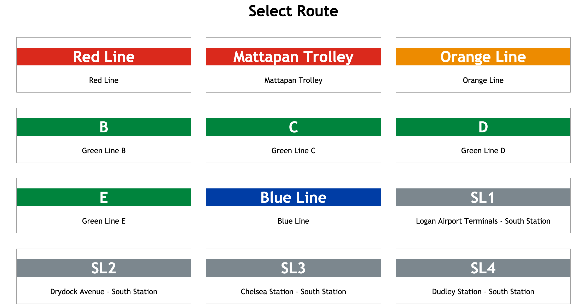
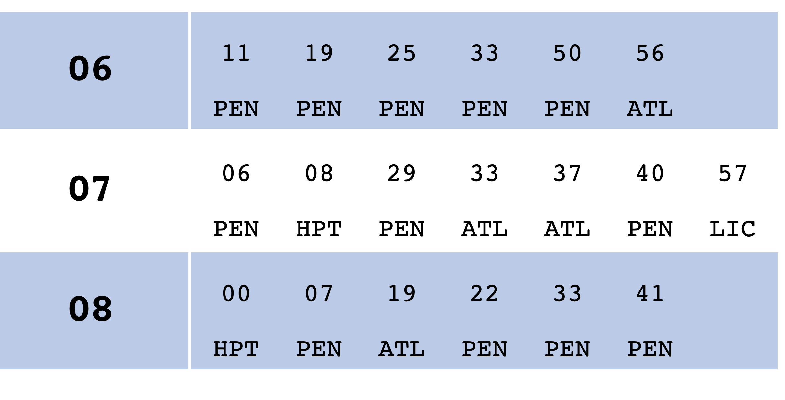

When I did an internship in rural Japan a few years ago, I noticed that every train station had large departure timetables posted, providing a widely accessible way to check what time a train will come. These timetables are usually formatted so that the hour of departure appears on the left-hand side while the minutes of individual departures appear on the right-hand side. Recently, I realized that I could use GTFS to recreate this format for all the stations a whole transit agency, and so I've published the two timetable generators above.
The Boston and LIRR generators work slightly differently. For Boston, you will be asked to select a transit route, such as the 1 bus, the Green Line D branch, the Hingham/Hull Ferry, or the Providence/Stougton Line. Then you will be asked for to select the origin and destination stations. The following page will provide a timetable of departures for trips on the selected route between the selected origin and destination.
For the LIRR generator, you will be asked only for the origin station and whether you want to go eastbound or westbound. The departures timetable generated will also contain a three letter abbreviation indicating the trip's terminal station.
Note that the Far Rockaway Branch indicates service towards the city terminals as being westbound and service towards Far Rockaway as being eastbound, though the actual direction of rail traffic is reversed relative to this from Valley Stream to Far Rockaway.
| Station Abbreviations for LIRR Timetable Generator | |
|---|---|
| ABBREV | Station Name |
| AMG | Amagansett |
| ATL | Atlantic Terminal |
| BAB | Babylon |
| CSH | Cold Spring Harbor |
| FRE | Freeport |
| FRK | Far Rockaway |
| FRM | Farmingdale |
| GPT | Greenport |
| GRN | Great Neck |
| HEM | Hempstead |
| HIC | Hicksville |
| HMB | Hampton Bays |
| HPT | Hunterspoint Avenue |
| HTN | Huntington |
| JAM | Jamaica |
| LBE | Long Beach |
| LIC | Long Island City |
| MIN | Mineola |
| MPP | Massapequa Park |
| MTK | Montauk |
| OYS | Oyster Bay |
| PAT | Patchogue |
| PEN | Penn Station |
| PTJ | Port Jefferson |
| PTW | Port Washington |
| RON | Ronkonkoma |
| SEA | Seaford |
| SPE | Speonk |
| VST | Valley Stream |
| WAN | Wantagh |
| WHA | Westhampton |
| WHE | West Hempstead |
| YAP | Yaphank |